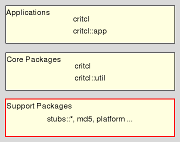

critcl::callback - CriTcl - C-level Callback Utilities
Be welcome to the C Runtime In Tcl (short: CriTcl), a system for embedding and using C code from within Tcl scripts.
This document is the reference manpage for the critcl::callback package. This package provides, via a stubs API table, data structures and functions to manage callbacks from C to Tcl. The package has no Tcl-level facilities. Its intended audience are mainly developers wishing to write Tcl packages with embedded C code who have to invoke user-specified command (prefixes) in Tcl.
This package resides in the Support Package Layer of CriTcl.

The package API consist of one opaque data structure (critcl_callback_p) and four functions operating on the same. These functions are
This function creates a new callback (manager) and returns it as its result.
The callback is initialized with the Tcl_Interp* interp specifying where to run the callback, the fixed part of the command to run in standard objc/objv notation, plus the number of free arguments to expect after the fixed part.
The fixed part is the essentially the command prefix of the callback.
All Tcl_Obj* elements of objv are protected against early release by incrementing their reference counts. The callback effectively takes ownership of these objects.
This function takes a callback of type critcl_callback_p and extends its fixed part with the argument, taking the first free slot for arguments to do so. This means that after the application of this function the specified callback has one free argument less.
With assertions active attempting to extend beyond the number of free arguments will cause a panic. Without assertions active expect a crash at some point.
This allows the user to extend the fixed part of the callback with semi-fixed elements, like method names (See Multiple methods).
The argument is protected against early release by incrementing its reference count. The callback effectively takes ownership of this object.
This function takes a callback of type critcl_callback_p and releases all memory associated with it. After application of this function the callback cannot be used anymore.
All fixed elements of the callback (owned by it) are released by decrementing their reference counts.
This function invokes the callback in the Tcl interpreter specified at the time of construction, in the global level and namespace, with the free arguments filled by the Tcl_Obj* objects specified via objc/objv.
It returns the Tcl status of the invoked command as its result. Any further results or error messages will be found in the result area of the Tcl interpreter in question. The exact nature of such is dependent on the callback itself.
With assertions active attempting to use more arguments than available will cause a panic. Without assertions active expect a crash at some point.
While the callback is running all Tcl_Obj* elements of the command, fixed and arguments, are protected against early release by temporarily incrementing their reference counts.
The example here shows the important parts of using the functions of this package for a simple callback which is invoked with a single argument, some kind of data to hand to the Tcl level.
// Create the callback with interpreter and command prefix in
// oc/ov, plus space for the argument
critcl_callback_p cb = critcl_callback_new (interp, oc, ov, 1);
// Invoke the callback somewhere in the C package using this one,
// with Tcl_Obj* data holding the information to pass up.
critcl_callback_invoke (cb, 1, &data);
// At the end of the lifetime, release the callback.
critcl_callback_destroy (cb);
Note that the functions of this package are designed for the case where the created callback (cb above) is kept around for a long time, and many different invokations.
Using the sequence above as is, creating and destroying the callback each time it is invoked will yield very poor performance and lots of undesirable memory churn.
While we can use the methodology of the previous section when a single (Tcl-level) callback is invoked from different places in C, with different methods, simply having another argument slot and filling it an invokation time with the method object, a second methodology is open to us due to critcl_callback_extend.
// Create one callback manager per different method the callback
// will be used with. Fill the first of the two declared arguments
// with the different methods.
critcl_callback_p cb_a = critcl_callback_new (interp, oc, ov, 2);
critcl_callback_p cb_b = critcl_callback_new (interp, oc, ov, 2);
critcl_callback_extend (cb_a, Tcl_NewStringObj ("method1", -1));
critcl_callback_extend (cb_b, Tcl_NewStringObj ("method2", -1));
// After the extension we have one free argument left, for use in
// the invokations.
critcl_callback_invoke (cb_a, 1, &dataX);
critcl_callback_invoke (cb_b, 1, &dataY);
// At the end release both managers again
critcl_callback_destroy (cb_a);
critcl_callback_destroy (cb_b);
The nice thing here is that the method objects are allocated only once and automatically shared by all the calls. No memory churn to repeatedly allocate the same string objects over and over again.
Andreas Kupries
This document, and the package it describes, will undoubtedly contain bugs and other problems. Please report such at https://github.com/andreas-kupries/critcl. Please also report any ideas for enhancements you may have for either package and/or documentation.
C code, Embedded C Code, code generator, compile & run, compiler, dynamic code generation, dynamic compilation, generate package, linker, on demand compilation, on-the-fly compilation
Glueing/Embedded C code
Copyright © 2011-2024 Andreas Kupries